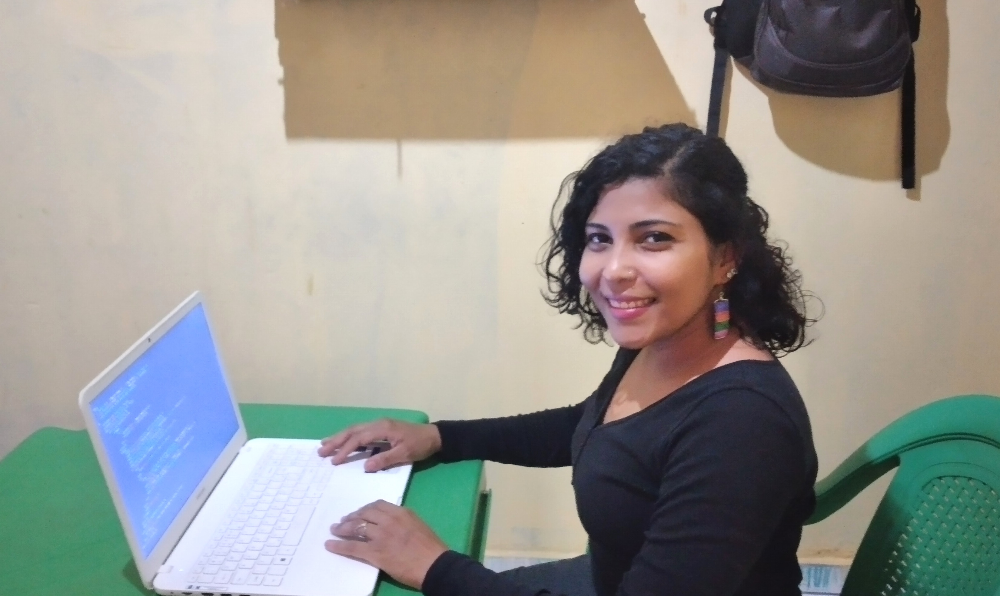

Meu nome é María de Los Ángeles, sou venezuelana, formada em Letras, e mesmo que minha paixão é a Literatura e o ensino, também gosto muito da tecnologia. Lembro que bem nova, tinha uns onze anos eu acho, passava meu tempo livre fazendo "animações" em Power Point, mas foi bom, pois agora sei muito bem como fazer slides kkk. Anos depois fiz varias oficinas de edição audiovisual, cheguei a fazer cronometragens com os colegas, e minha parte favorita era a edição de vídeo. Já na faculdade, a disciplina "Tecnologia de Informação e Comunicação" fiz parte do programa do curso; não foi um desafio para mim, ao contrario, gostei de elaborar blogs e fazer uso das redes sociais com fins educativos. E agora, em plena pandemia, sou privilegiada ao ter acceso a tecnologia para minha formação. Atividades como pesquisar, baixar documentos, participar em aulas virtuais são coisas que para muitos é simples, mas para outros é uma realidade difícil de alcançar. Porém, meu verdadeiro contato com a tecnología esta sendo o curso de "Programação Full Stack" que graças a Toti posso ter aceso, eu e mais outros colegas migrantes y refugiados, que como eu estão em Brasil procurando novas oportunidades. Tomara a tecnología continue abrindo portas para nós, por enquanto lhes convido a abrir as janelas, e me conhecer mais um pouco.
Podem me seguir lá no Instagram

Não nasci para ocupar um espaço e nada mais.
Desconheço qual será o meu papel.
Me aconteceu de ser mulher e não me queixo,
me aconteceu de cair na umidade do tempo,
na inóspita sequidão dos caminhos
porém aí estanco
entre escombros e desperdícios.
Destruam a minha epiderme ressentida,
despedacem meus sonhos, minha alegria,
aniquilem-me
mas não queiram me sancionar
porque um dia apareci sobre a terra
e tive voz e gritei
e tive fronteiras e não quis despertar sem elas
e tive armas e ali estão
perfiladas, imóveis, ariscas.